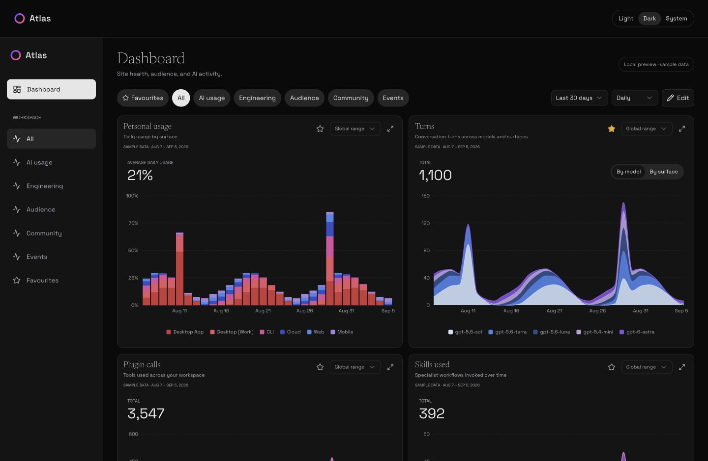

Explore every angle
Switch between engineering, audience, community, and AI activity. Hover over a chart for exact values, adjust the date range, or expand a card for a closer look.
Explore the charts →Atlas / by AI Socratic
A dashboard you can make your own. Explore your metrics, find what changed, and arrange the cards around the way you work.
Open source · Self-hosted · Demo needs no account
A look inside

The actual Atlas interface, shown with illustrative data. Open the demo to explore all 20 cards.
Built around your work
Start with the big picture, then get closer to the details.
Switch between engineering, audience, community, and AI activity. Hover over a chart for exact values, adjust the date range, or expand a card for a closer look.
Explore the charts →Drag cards into place, resize them, and star the ones you use most. Each category keeps its own arrangement, and your demo layouts stay saved in your browser.
Try the canvas →Self-host Atlas with PostgreSQL and its built-in collectors. Bring together site performance, SEO, regional latency, releases, errors, and repository health.
Set up your own Atlas →Take a look around
The demo is a working dashboard with sample data. Try the selectors, inspect a chart, or rearrange the whole workspace.
No sign-up. No connected accounts.
Your edits stay in this browser.